青木家具厂已经能登记订单、核对库存，也能用 MIS 比较实际成本与月度计划。厂长现在要决定：新增需求出现后，应加班、外包，还是添置设备？工时和成本有记录，未来需求、外包质量与可接受风险还需要判断。DSS（Decision Support System，决策支持系统）把数据、模型分析与人的经验结合起来，支持比较可选方案。
本节先辨认决策问题，再看系统怎样帮助人反复改条件。正式教材顺序是 3.4.1 概念、3.4.2 功能、3.4.3 特点、3.4.4 组成；BI、多维分析与决策树计算放在相关扩展中。名称相近的“库”和“处理”分别承担什么，需要沿具体对象读。
3.4.1 决策支持系统的概念：哪些环节仍需人判断
教材的两个定义分别用“语言、知识、问题处理系统”与“交互、灵活、适应性强的信息系统”描述 DSS。它们是不同的概念观察，不宜直接当作两库图中的三个物理部件。共同重点是：数据和模型提供支持，主要面对结构化程度不高的问题，用户通过交互把经验、目标和判断带入分析。友好界面便于非计算机专业人员表达意图、调用分析，也可按当前问题即时创建模型、按需加入知识成分；这说明能力方向，不能保证任何实现都零门槛或建模立即成功。
结构化程度看规程，不能只看结果好不好
结构化问题的决策过程可以明确规定，例如按既定规则核对领料。它不自动保证唯一最优、无需人工核实或计算一定简单。半结构化问题只有部分环节能明确计算：厂里可按工时估算加班产量，却仍需判断疲劳、订单变化和外包风险。非结构化问题缺少覆盖整体决策的固定规程，例如新市场应采用哪种长期经营方向；局部数据、试算和情境比较仍可提供帮助。
旧题在“可建立适当算法产生方案、得到较优解”的限定下，要求识别半结构化决策。这个题内判别不能扩写成“所有非结构化决策完全不能建模”。DSS 的典型对象是上层管理者，教材功能又明确支持各种层次；基层调度需要交互比较方案时，也可以使用决策支持。
两库、三部件与知识扩展，各按哪个口径数
经典两库结构有数据库子系统、模型库子系统、对话子系统三个部件。数据库保存并管理决策数据；模型库保存方案分析的模型；对话把用户的操作、假设与返回结果连接起来。用户与对话、对话与两库、两库之间均有往返联系，不能画成一次走完的三步流水线。实际模型需要的数据可以查询，计算结果也可供后续比较。

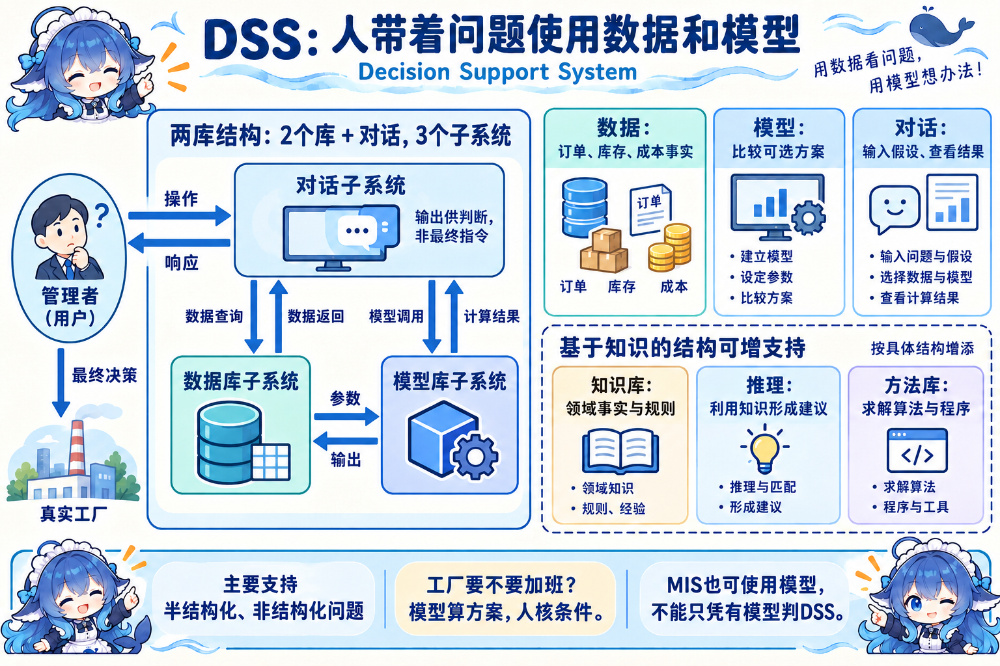

教材另列基于知识的结构。知识库保存领域事实和规则，推理部分使用知识形成建议；方法库管理求解算法或程序，模型库表达某个问题的分析框架。它们可相互配合，名称不能互换。某道题给“数据库、模型库、推理、用户接口”四部分，就在这套结构下判断；不能用它抹去教材两库结构或宣称所有 DSS 永远只有四部件。MIS 也可用模型；更广的 DSS 分类还包括数据驱动、知识驱动等类型。
教材沿早期数据库/模型库/人机交互，概述后来增加知识和方法、形成智能支持，再引入网络群体协商及分布资源。智能决策支持系统（IDSS，Intelligent Decision Support System）强调智能技术支持；群体决策支持系统（GDSS，Group Decision Support System）帮助多位决策者沟通和协商；分布式 DSS 整合分布的数据库、模型与知识等资源。协商对象与资源部署是不同观察角度，可以同时存在。这些发展不会令有效的早期结构自动失效。
3.4.2 功能：一次 What-if 需要哪些支持
厂长先调出内部订单、库存、成本，再查看外部市场需求、供应价格与竞争情况。实际完工和客户反馈帮助校准假设。这三种信息回答“系统内部是什么情况、外部变了什么、执行后的事实怎样”，不能只保留一张内部数据库表。
系统还要存储和管理库存控制、排产等模型，以及统计检验、回归、线性规划等方法；对数据、模型、方法提供查找、增加、修改和删除。将数据输入选定模型和方法后，产生汇总、分析或预测。用户经人机对话提出 What-if（假设分析）：“若需求上升，且外包质量限制更严，两方案怎样变？”图表展示比较结果，用户可继续改假设、换模型。分布使用时，异地部门共享获准的数据、模型和方法，并有相应传输支持。

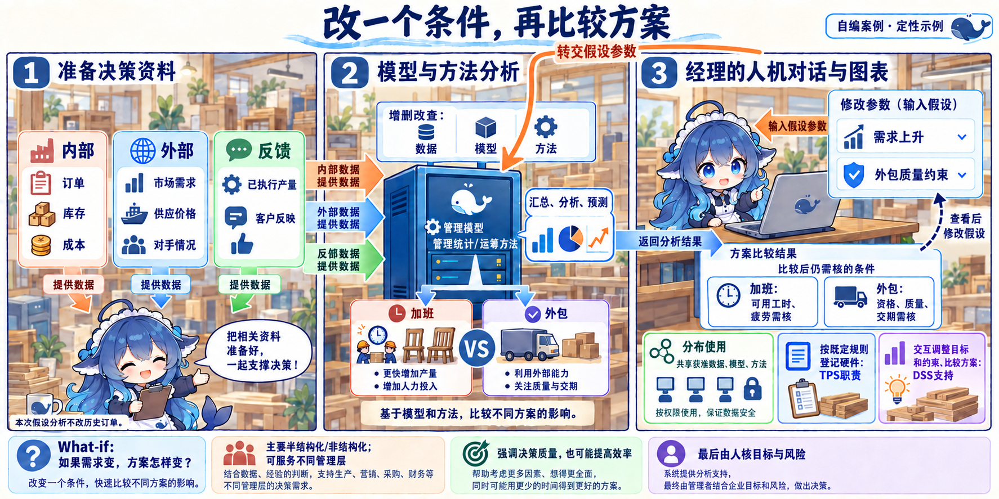

3.4.3 特点：支持可以反复，最终选择仍由人作出
面向决策者的需求是设计依据；半结构化问题、人机辅助、动态调整与交互处理构成教材的五项特点。模型计算一组数值、推荐一个候选，可以成为支持结果。教材的答案限制需与其加工、预测和假设分析功能合读：人作最终判断，系统不强迫预先规定的全部决策顺序；不能据此禁止输出数值或建议。
若任务改为按已定规则登记领料，TPS 职责就足以描述这部分。若仍需改变需求、工时、质量约束并比较方案，DSS 的交互支持继续有用途。二者可以在一个平台中共存。DSS 强调决策有效性与质量，如方案是否符合目标和现实约束；更快处理也可能提高效率，但速度不替代质量判断。

3.4.4 组成：把决策数据和模型建设好
本小小节的教材标题是“组成”，实际从数据重组确认、数据字典、数据挖掘与智能体、模型建立四项建设问题展开。它与前面画“库和对话”的结构图观察重点不同，不能按旧笔记的 3.4.4 决策树标题替换正式内容。
订单按套记录、仓库按件记录、领料按板材体积记录，直接相加没有业务意义。先识别有关数据、核正确性与一致性，按分析需要重组。这里补充数据字典的术语说明：它记录字段含义、类型和编码等元数据；本例还维护单位与指标口径。字典描述数据，真实订单流水记录业务事实；产品数据库的系统字典不会自动替组织确定全部业务含义。还要说明时间范围、来源与更新时间，避免把某一时刻的固定析取当成持续有效的分析底座。
DW（Data Warehouse，数据仓库）为分析组织多源集成历史数据，支持主题查询，常与作业处理系统分离。把订单、库存与外部价格识别、混合并清洗，统一编码与单位、确认分析意义，再按产品—地区—月份等逻辑数据模型载入分析表；堆放原文件不能替代这些工作。分离有助于安排不同负载，仍需数据更新与质量管理；建了仓库也不能保证所有决策资料都准确、足够或即时。

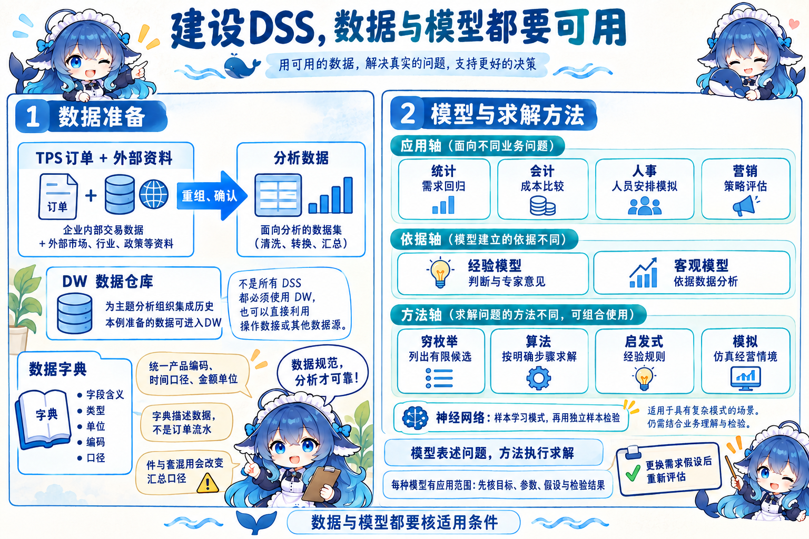

模型、方法与知识：存什么，怎样检验
统计模型用于需求回归、方差分析或指数平滑；会计模型用于折旧、成本等比较；人事模型可用环境模拟与角色练习，营销模型可比较广告策略和消费者行为。应用不同，模型的假设、参数和解释也需匹配。按依据又可分经验与客观：前者包括人的判断和专家意见，后者依赖数据分析。不能让“统计”“经验”“模拟”竞争同一个分类层级。
教材列穷枚举、算法、启发式、模拟四种建模方法：穷枚举考察有限候选，算法按求解步骤运算，启发式使用经验规则，模拟在仿真环境改变策略。方法可以组合；一个模拟模型也需要算法运行。教材把神经网络紧接在“穷枚举”下叙述，这不构成神经网络的一般定义。神经网络由许多处理单元连接，输入经连接权重影响输出；训练从样本调整权重、学习模式，再用独立样本检验。它既不等于遍历全部可能输入，也没有“训练后必然有效”的保证。
本节的智能体指用于查询、分析、趋势或异常识别、结果跟踪的软件工具角色。它能执行哪些动作依具体实现而定，不能单凭名称认为它自动替人作全部决策。挖掘与查询的差别，接着用 BI 的分析环节辨认。
扩展：BI、DW、ETL、OLAP、DM 各是哪种对象
BI（Business Intelligence，商业智能）是业务数据分析的过程与系统实践，与 DSS 可相互支撑。DSS 更强调具体决策中的人机分析，BI 常组织数据准备、分析与展示；不能普遍画成“DSS 必然升级后被 BI 替代”。
本例采用练习中的四阶段框架：ETL（Extract, Transform, Load，抽取、转换、加载）准备并初步整合数据；DW 组织分析数据；分析使用 OLAP（Online Analytical Processing，联机分析处理）与 DM（Data Mining，数据挖掘）；最后以报告和图表展现。ETL 是过程，DW 是数据组织，OLAP 和 DM 是分析技术；OLTP 则是处理作业事务的方式。相邻位置不表示它们都是同类系统。

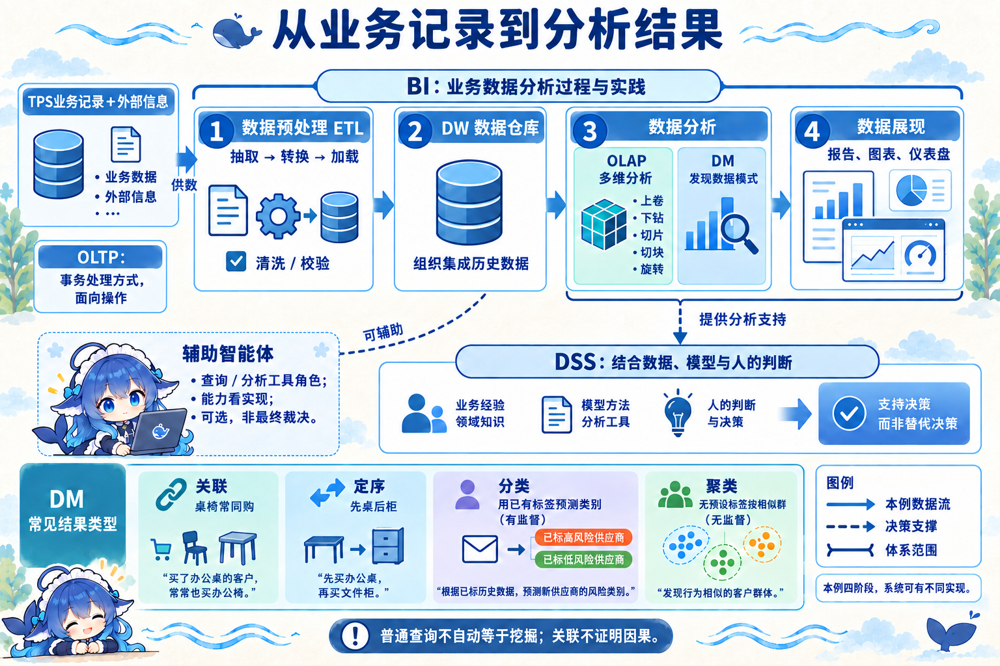
DM 寻找数据中的模式。教材的“联合”可按关联理解：桌椅经常同购；定序发现先桌后柜等顺序规律；分类用已有标签学习并预测类别；聚类按相似性寻找无预设类别的群组。关联不证明因果，分类与聚类的关键输入条件不同。模式形成的规则还需用其他数据检验和精炼，图形工具帮助查看结果，不能保证规则永久有效。教材将仓库存取/查询广泛称为挖掘，现代技术用语应收紧：普通查表或汇总并不自动发现隐藏模式，预测也不是 DM 的唯一用途。
沿同一三维模型，逐次改变观察条件
自编数据的度量是销量（件），维度是产品桌/椅、地区华东/华南、2026 年 1—3 月。月可以上卷到第一季度。完整 12 单元如下，所有操作都指向这组固定事实。
| 地区与产品 | 1 月 | 2 月 | 3 月 | 第一季度 |
|---|---|---|---|---|
| 华东·桌 | 10 | 20 | 30 | 60 |
| 华东·椅 | 40 | 50 | 60 | 150 |
| 华南·桌 | 15 | 25 | 35 | 75 |
| 华南·椅 | 45 | 55 | 65 | 165 |

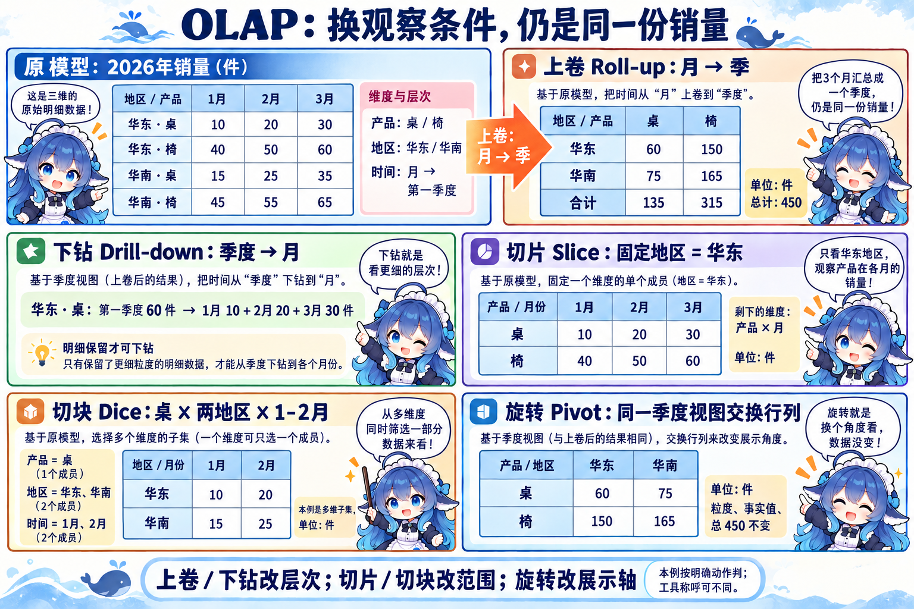
上卷（Roll-up）把月汇到季度，四组值是 60、150、75、165，总量 450 件。下钻（Drill-down）沿反方向细看，例如华东桌 60 展开成 10、20、30；原明细必须可用，不能从一个总数凭空还原。切片（Slice）固定地区=华东，本例剩产品×月二维，保留 6 个值。切块（Dice）限制桌、两地区、1—2 月，得到三维子集的 4 个值 10、20、15、25。软件界面对单成员选取的称呼可能不同，判断时说清具体取值和剩余范围。
旋转（Pivot）在同一季度视图交换地区与产品的行列：原“华东：桌60、椅150；华南：桌75、椅165”，变为“桌：华东60、华南75；椅：华东150、华南165”。事实、粒度与 450 总量均不变。若动作把月加总到季度，改变的是层次；若只改行列位置，改变的是展示轴。没有新模型预测参与这些汇总。
关联练习补充：信息资源如何组织与集成
IRM（Information Resources Management，信息资源管理）关注信息资源的组织与有效使用；本地题目采用单数 Resource 的历史写法。该练习从两侧描述：数据资源管理强调数据控制，信息处理管理关心管理人员怎样获得和处理信息，并把前者作为起点和基础。先把产品编码、质量与权限管好，才能让部门取得适当资料；这套题内框架不穷尽全部 IRM 理论，也不等同 DSS 结构中的两个库。
企业信息资源集成管理又问另一组对象：信息功能集成是前提，企业内外信息流集成是核心，各种信息手段集成是实施基础。青木先协调销售、仓库、采购的采集和处理职责，再贯通订单与供应商信息，以接口、网络和工具协同承载。只更换网络设备不能证明职责与信息流已协调。这里来自关联练习与 2012 下半年上午双空题；第三项是来源解析的说明，不伪造第三个作答空。这是扩展，正式 3.4 仍有四个小小节。

扩展：风险型决策树先算条件概率，再比较净期望
EMV（Expected Monetary Value，期望货币价值）用概率加权各路径的货币收益。这里概率给定、风险中性，以净期望最大为准，金额不折现且同一口径。决策节点代表主动选方案，机会节点代表自然状态；机会节点加权，决策节点择优，从后往前计算。决策方案本身没有一组“自然发生概率”。
先完整演算自编青木 5 年扩容题。前 2 年旺的概率 0.6、淡 0.4；若前旺，后 3 年旺 0.75、淡 0.25；若前淡，后旺 0.25、淡 0.75。A 大线初投 120 万元，年经营净收益旺 60、淡 −10 万元；B 小线初投 50，年旺 35、淡 10 万元。年经营净收益已经扣经营成本，还没扣初投；同一段状态持续该段全部年份。

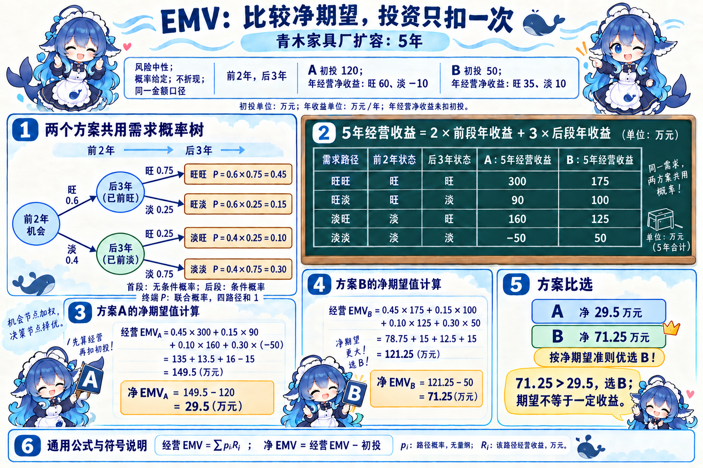
| 前/后状态 | 联合概率 | A 五年经营收益（万元） | B 五年经营收益（万元） |
|---|---|---|---|
| 旺/旺 | 0.6×0.75=0.45 | 2×60+3×60=300 | 2×35+3×35=175 |
| 旺/淡 | 0.6×0.25=0.15 | 2×60+3×(−10)=90 | 2×35+3×10=100 |
| 淡/旺 | 0.4×0.25=0.10 | 2×(−10)+3×60=160 | 2×10+3×35=125 |
| 淡/淡 | 0.4×0.75=0.30 | 2×(−10)+3×(−10)=−50 | 2×10+3×10=50 |
四概率和为 1。经营 EMV=ΣpᵢRᵢ，pᵢ 为路径概率，Rᵢ 为该路径经营收益。A：135+13.5+16−15=149.5，净 149.5−120=29.5 万元；B：78.75+15+12.5+15=121.25，净 121.25−50=71.25 万元。按给定准则选 B。选择只凭最旺路径收益会改变评价准则；期望也不能保证一次实际收益恰好如此。
完整题源：2014 下半年 Q70 的七年建厂决策
原题两方案：大厂初投 500 万元，销路好年获利 200，差年亏损 20；小厂初投 200，好年获利 100，差年获利 20。前 2 年销路好 70%；前好则后 5 年好 80%，前差则后 5 年好 10%。问为取得七年最大总收益如何选择。选项 A 大厂超过500万，B 大厂略多于300万，C 小厂超过500万，D 小厂略多于300万。此风险型题按期望净收益比较。
四路径联合概率 0.56、0.14、0.03、0.27。大厂七年经营收益依次 1400、300、960、−140；加权 784+42+28.8−37.8=817，扣500得317万元。小厂七年经营收益 700、300、540、140；加权392+42+16.2+37.8=488，扣200得288万元。因此 B。
独立倒推核：大厂后5年在前好条件下 5×(0.8×200+0.2×(−20))=780，在前差下 5×(0.1×200+0.9×(−20))=10；总净0.7×(2×200+780)+0.3×(2×(−20)+10)−500=317。小厂后期两条件值420、140，总净0.7×(2×100+420)+0.3×(2×20+140)−200=288。答案解析卷原图的圈号不是标准决策/机会形状，图未写初投，必须合读题干。
若第 2 年末还允许追加扩建，就在对应已观察状态后增加决策节点；追加投资只扣发生扩建的分支。先计算末端收益，在后续决策节点选择，再把结果往前概率加权。没有扩建成本和新增年收益等完整条件时，不能替原题补算扩建答案。
回到厂长的选择
先确定问题和目标，核可用数据与分析口径；再选适合的模型和方法，交互比较条件，最后由人决定方案。DSS 两库与知识扩展解释结构，九功能解释能力，五特点解释使用方式，数据和模型建设解释支持能否成立。BI、OLAP 和挖掘提供分析工具，EMV 在明确概率和准则下帮助比较；任何一个缩写都不足以替代完整判断。
信息资源管理的补充说明供数怎样具备使用条件，不增加 DSS 的正式小小节或两库部件。识别题源口径、模型假设与实际动作之后，再用索引定位相邻概念，避免仅靠名称选择。